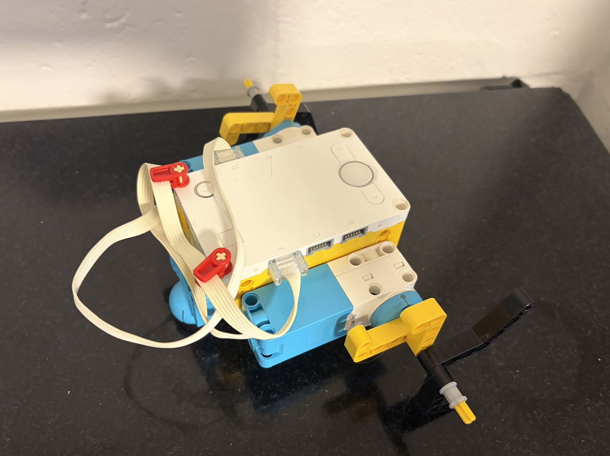
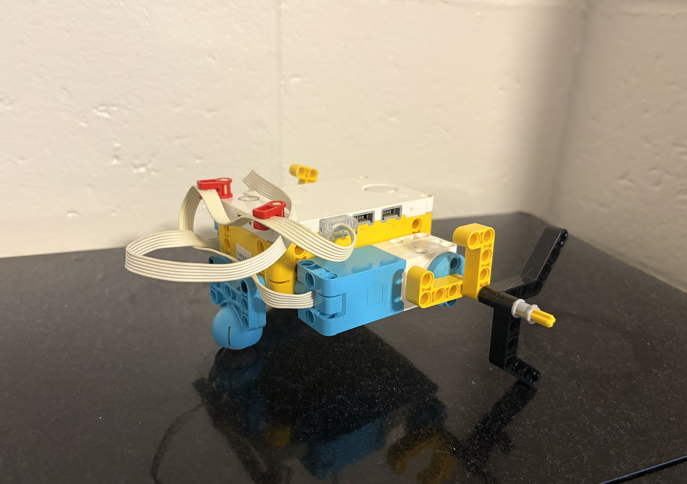
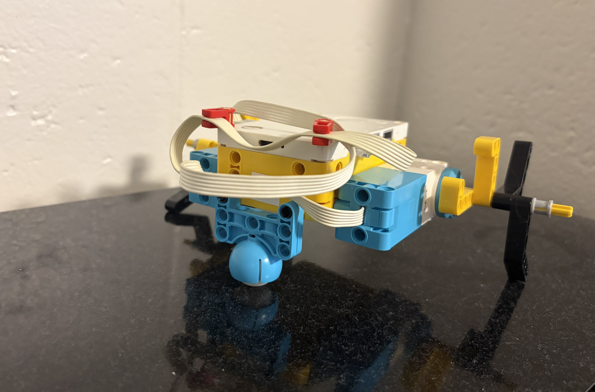
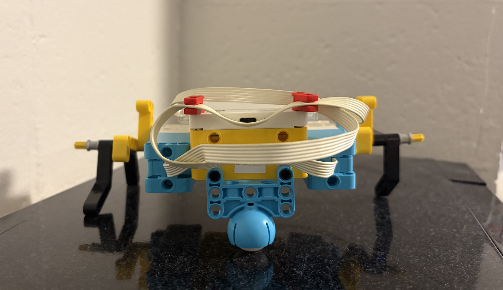

Project Portfolio
Project 2: Silly Walks





This project, we introduced the concept of creating a simple robot that could move in a "silly" manner, focusing on basic programming and control systems. We used the pre-programmed code in the SPIKE Prime software to move the robot. I took inspiration from a spider to help move my robot. I created multiple legs using various connectors off an axle on both sides of the robot. I also used the ball and cup to keep the front of my robot off the ground to create less friction as it moved around on the ground. As it moves, the axles rotate, causing the pieces that were the legs to lift and place the robot forward.